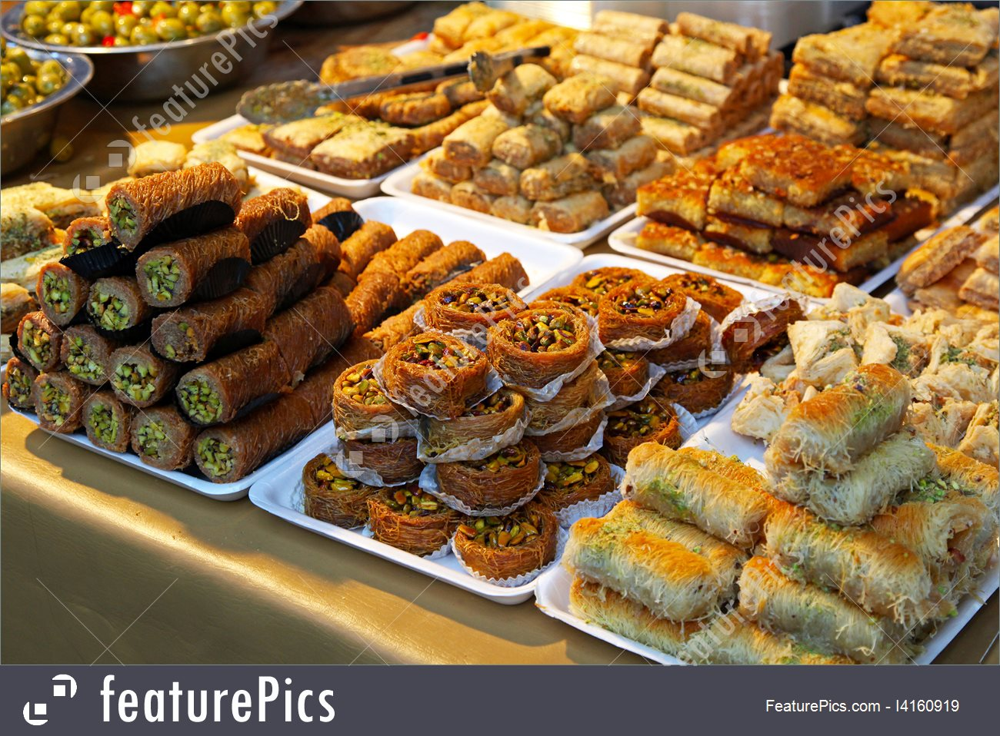

Like the baklava, Turkish delights are sweets known worldwide and spread throughout the Mediterranean basin, but it’s in Istanbul it finds his roots, invented in 1776 by the Ottoman confectioner : Haci Bekir. First known as the “rahat lokum”, meaning “rest of the throat” in Turkish, because these fluffy bites were enjoyable to chew, the Turkish delight is made from cornstarch, sugar and fruit paste or nuts. It was a widespread candy among the ladies of high society during their afternoon teas. Turkish delights were also used as a love proof among couples.  This candy made the happiness and success of Haci Bekir and his shop (which still exists in the Eminönü district). He was also appointed chief confiseur of the Court of Sultan Mahmud II. Today they are found everywhere in the tourist district of Sultanahmet, including the Spice Bazaar, but we recommend you to prefer small boutiques in less touristic neighborhoods offering only Turkish Delight because they are of higher quality, made without sweeteners and artificial preservatives. The Güllaç is an Ottoman dessert that is found especially during the month of Ramadan, it is cited in a cookbook retracing the banquet celebrating the circumcision of the son of Suleiman the Magnificent in 1539. Considered as the ancestor of the baklava, the güllaç whose etymology comes from “Güllü-aş” or “rose meal” has a unique texture with ingredients such as rose water, walnut, pomegranate and milk . You can also find other fruits in some variants. To prepare güllaç you must dip very thin sheets of phyllo dough in some sweet milk, then once well softened, superimpose them in a plate. Every two or three sheets of phyllo dough you sprinkle the preparation of walnuts, hazelnuts, pistachios, ground almonds or coconut powder. Then the dish is covered with the milk used for dipping, fragrant rose water and / or vanilla. Everything is usually decorated with a line of chopped pistachios and a candied cherry (or pomegranate seeds, if in season).